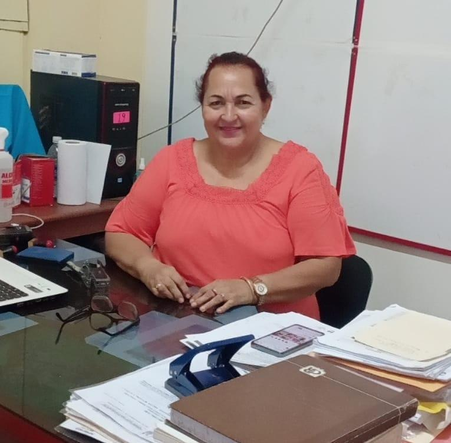

LA I.E. JOSE ABELARDO QUIÑONES GONZALES TE DA LA BIENVENIDA
"Año del Bicentenario, de la consolidación de nuestra independencia, y de la conmemoración de
las heroicas batallas de Junin y Ayacucho"
Directores de la Institución
Nuestra institución educativa JOSE ABELARDO QUIÑONES GONZALES ha tenido varios directivos desde
su creación en 1963. El primer director fue Lorenzo Navarro Ramírez y otros destacados
profesionales como la Señora Magali Caro Lozano, la
Señora Isabel Seijas Ruiz, Luis Emilio Tuesta Guerra. En la
actualidad, la dirección está a cargo de la Profesora Mg. Dorina Ramírez Aguilar, designada
mediante concurso nacional de Directores junto a los sub directores,Irineo Choquetico Quecara y Lorena Vargas.
Ambientes de la Institución
Nuestra institución educativa es un testimonio del compromiso de formar mentes brillantes,
fomentar la creatividad y construir amistades duraderas. Cada rincón de nuestra escuela está
diseñado para inspirar el aprendizaje y el crecimiento personal. Desde aulas equipadas con
tecnología moderna hasta espacios verdes que invitan a la reflexión, nos esforzamos por crear un
entorno que apoye el desarrollo integral de nuestros estudiantes. Además, promovemos valores
como el respeto, la responsabilidad y la colaboración, fundamentales para el éxito tanto dentro
como fuera del aula.
Docentes de la Institución
En nuestra institución, creemos en la educación transformadora y en el compromiso de nuestros
docentes por inspirar y guiar a nuestros estudiantes hacia el éxito. Fomentamos un ambiente de
aprendizaje donde se integran el conocimiento y los valores para formar ciudadanos responsables
y
líderes del mañana. Nuestra misión es empoderar a cada alumno, ayudándolos a alcanzar su máximo
potencial académico y personal. Trabajamos en colaboración con familias y la comunidad para
asegurar
que cada estudiante esté preparado para los desafíos futuros.
DIRECTORES DE LA IE
Sub Director Irineo Choquetico Quecara

Sub Directora: Lorena Vargas
Código modular Primaria: 0271486
Nombre de la UGEL: UGEL DE CORONEL PORTILLO
Código Modular Inicial: 1684935
Gestión: Pública de gestión directa
Gestión a cargo de: Pública - Sector Educación
Área: Urbano
Alumnado: Colegio Mixto